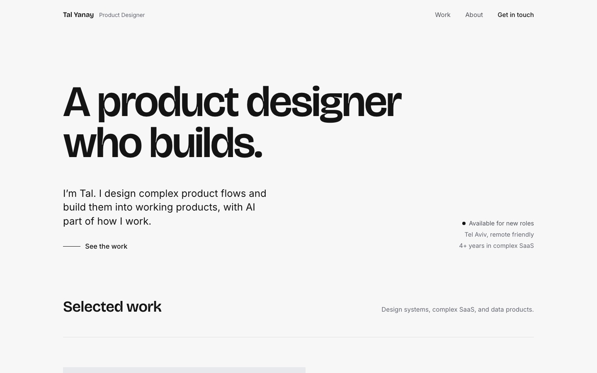
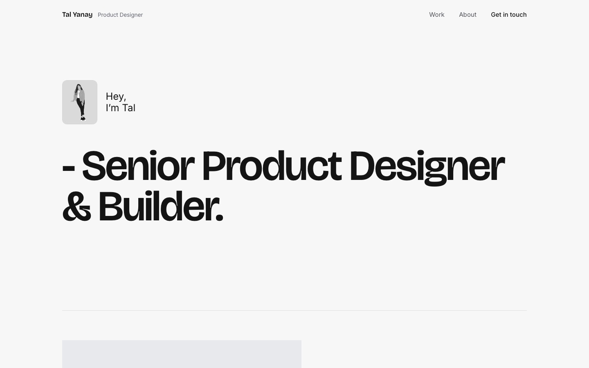
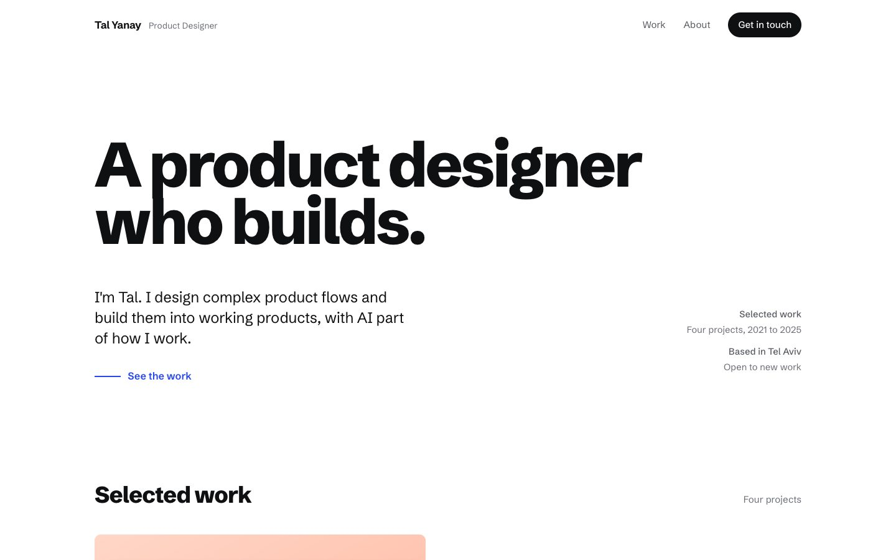
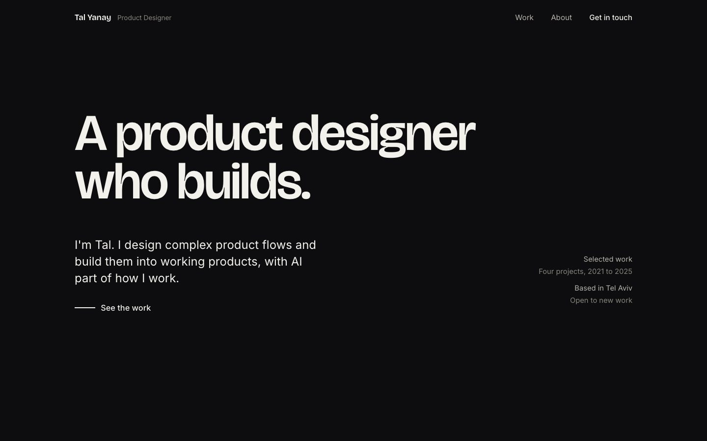
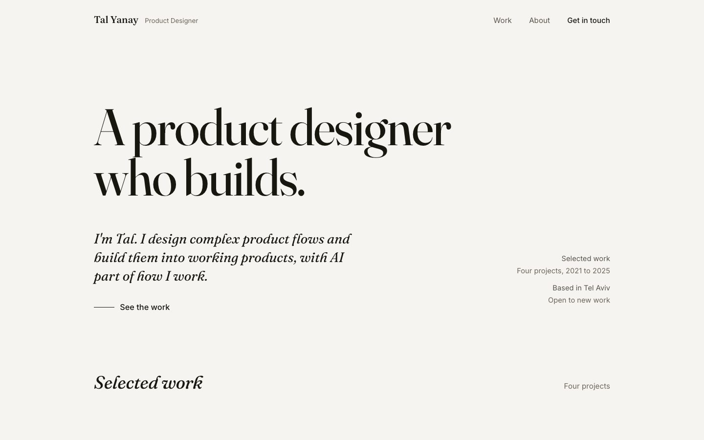

Gallery, light refined
Open full screen ↗A bright white-cube room; the work is the only colour. The front-runner taken to a higher level of craft: gallery wall labels, a work-is-unveiled clip reveal, scroll-aware nav, refined press and hover states, and typographic polish.
See the original (unrefined) version ↗

Gallery, light greeting opening
Open full screen ↗Same page, different hello. The refined front-runner with a reworked opening: a small portrait and a short "Hey, I'm Tal" greeting above an oversized "Senior Product Designer & Builder" headline. Everything from Selected work down is identical to the refined version.

Studio
Open ↗The portfolio behaves like a working product. A sticky work-viewer reacts live as the case notes are read beside it. Crisp grotesk, electric-blue accent.

Gallery, dark
Open ↗A dim room; the work is the only lit thing. The original dark version, kept for comparison.

Reading Room
Open ↗A calm, well-set page you want to stay in. Warm paper, Fraunces serif, real reading. Editorial without the newspaper costume.